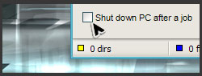

Schlagzeile - UltraDefrag 5.0.0 RC1 freigegeben.
Dieser Freigabekandidat enthält alle neuen Funktionen der ersten v5.0.0 Version.
- Die Höhe der Laufwerksliste kann nun durch ziehen des unteren Randes angepasst werden.
- Der Fortschritt wird nun in der Statusspalte der Laufwerksliste angezeigt.
- Die Laufwerksbezeichnung wird nun in der Laufwerksliste angezeigt. Bitte überprüft ob diese richtig angezeigt werden.
- Es sind nun mehr Aktionen verfügbar, die beim Abschluss von UltraDefrag ausgeführt werden können.
- Nicht benutzte Blöcke der Zuordnungseinheitendarstellung sind in Grau gehalten, dadurch können sie nicht mit freiem Speicher verwechselt werden.
- Es ist nun möglich Pfade als Argumente anzugeben, dies half ein Problem mit dem Explorer Kontextmenü unter Vista und höher zu beheben.
- Die Defragmentierung von normalen Dateien und Volumen-Metadateien wurde verbessert.
- Die Komplettoptimierung wurde verbessert, welche alle Dateien ungeachtet ihrer Fragmentierung behandelt.
- Eine Schnelloptimierung wurde hinzugefügt, welche hauptsächlich fragmentierte Dateien behandelt.
- Eine Optimierung des MFT wurde hinzugefügt, welche nur den MFT behandelt.
- Über eine Umgebungsvariable wird die Erstellung der Protokolldatei gesteuert, was das Erstellen von Problemberichten erheblich vereinfacht.
- Die Dateigröße, Dateistatus und der Zeitpunkt der Berichtserstellung werden nun in den Fragmentierungsberichten aufgelistet.
- Alle Optionen können nun über Kommandozeilenparameter angegeben werden.
Weitere Informationen zu diesen Parametern lesen Sie bitte im Handbuch nach.
Wir freuen uns über Kommentare und Vorschläge zum neuen Aussehen!
Bitte besuche UltraDefrag.WikiSpaces.com und übersetze die fehlenden Teile der Sprachen denen Du mächtig bist.
Besten Dank im Voraus! Wir schätzen Deine Unterstützung sehr!
Bilder der neuen Oberfläche. Testversion herunterladen.
Das Änderungsprotokoll enthält eine komplette Liste aller Änderungen.
Neuigkeiten - UltraDefrag 4.4 wurde endlich freigegeben!
Wir möchten Euch die neueste Version von UltraDefrag vorstellen, sie enthält folgende Verbesserungen:
- Die Fortschritsanzeige wurde der Titelleiste hinzugefügt, damit sie auch im Tooltip des Taskbar-Icons sichtbar ist.
- Der ein Zeichen lange Operationsname der Fortschritsanzeige wurde durch die ausgeschriebene Variante ersetzt.
- Teilweises Defragmentieren wurde hinzugefügt, um die Anzahl der Fragmente zu verringern, falls nicht genügend freier Speicher für das Zusammenhängen der Datei vorhanden ist.
- Der Festplattenoptimierungsalgorythmus wurde verbessert um unnötige zusätzliche Durchläufe zu verhindern.
- Ein kleines Problem wurde beseitigt, welches verhinderte die Optimierung zu unterbrechen.
- Der Festplattenoptimierungsalgorythmus wurde verbessert um zu verhindern, dass stark fragmentierte Bereiche übersprungen werden.
- call, man, type Kommandos wurden zur Startzeitumgebung hinzugefügt.
- echo, exit, pause, set Kommandos wurden verbessert.
- History der eingegebenen Kommands wurde dem interaktiven Modus hizugefügt. Mit den Pfeiltasten können diese wiederverwendet werden.
- Drücken der Escape Taste bricht nun die Startzeitskriptausführung ab und wechselt unverzüglich in den interaktiven Modus.
- Verzögerte Ausführung des boot-off Kommandos hinzugefügt, dies hebt die Einschränkung auf, dass boot-on/off nicht vor reboot/shutdown wirksam werden.
- reboot/shutdown Kommandos kennzeichnen den Startvorgang nun als erfolgreich.
- Falls nur eine Tastatur vorhanden ist, wird die 10 Sekunden Pause übersprungen.
- Die Fortschrittsanzeige wurde für die Ausgabeumleitung bereinigt.
- Es ist nun möglich die Sprache nachträglich ohne Neuinstallation zu ändern.
- Hindi wurde hinzugefügt.
- Folgende Übersetzungen wurden aktualisiert:
Chinesisch (Traditionell), Kroatisch, Dänisch, Niederländisch, Französisch, Griechisch, Polnisch, Portugiesisch, Russisch, Serbisch, Schwedisch, Türkisch.
Das Änderungsprotokoll enthält eine komplette Liste aller Änderungen.
UltraDefrag ist ein leistungsstarkes Festplatten-Defragmentierungswerkzeug für Windows. Es ist der erste Open Source Defragmentierer, der das Defragmentieren von gesperrten Systemdateien unterstützt. Alle Dateien, einschließlich Registrierungs- und Auslagerungsdateien, können von UltraDefrag während des Windows Startvorganges verarbeitet werden.
Eines der vorrangigen Ziele der Struktur von UltraDefrag ist es, die Aufgabe so schnell und zuverlässig wie möglich zu erledigen.
UltraDefrag ist vollständig kompatibel zu Windows NT 4.0, Windows 2000, Windows XP, Windows Server 2003, Windows Vista, Windows Server 2008, Windows 7 und allen 64-bit Editionen von Windows.
Einige UltraDefrag Höhepunkte (die komplette Funktionsliste ist hier):
 Startzeit Defragmentierung :
Startzeit Defragmentierung :
Diese Funktion ermöglicht es jegliche Systemdateien zu defragmentieren. Einschließlich Auslagerungs-, Registrierungs-, Ruhemodus- und viele andere Dateien, welche vom System oder den Anwendungen gesperrt sind, während Windows vollständig läuft.
- Computer herunterfahren, wenn eine Aufgabe beendet ist :
Wir alle wissen, wie lange eine Defragmentierung oder Optimierung läuft. Meist lassen wir während dessen den PC unbeaufsichtigt. Mit dieser Option kann UD den PC herunterfahren, nachdem die Aufgabe erledigt ist. Das spart Strom und vermeidet viele Gefahren.
 Schnelle Festplatten Optimierung:
Schnelle Festplatten Optimierung:
Der Optimierer ordnet alle Daten neu und verschiebt sie an den Anfang der Festplatte. In vielen Fällen haben wir festgestellt, dass das System stabiler und viel besser unter Last läuft, wenn die Daten am Anfang des Laufwerks liegen.
 Defragmentieren einzelner Dateien und Ordner :
Defragmentieren einzelner Dateien und Ordner :
Nach der Installation von UltraDefrag besteht die Möglichkeit, einzelne Dateien oder Ordner zu defragmentieren. Diese Option ist äußerst nützlich, wenn Du kürzlich eine Anwendung oder ein Spiel installiert hast und diese sofort defragmentieren möchtest um die maximale Leistung zu erreichen.
 Erweiterte und anpassbare Benutzeroberfläche :
Erweiterte und anpassbare Benutzeroberfläche :
UltraDefrag ermöglicht es Dir die Benutzeroberfläche anzupassen, beispielsweise die Schriftart und deren Größe. Das aktuelle Windows Design wird übernommen. Im Gegensatz zu Vista und anderen Versionen von Windows Defrag, zeigt UD eine grafische Darstellung der Festplatte, wie bei älteren Windows Generationen.
Übersetze UltraDefrag in Deine Muttersprache!

Du kannst an der Übersetzung von UltraDefrag durch hinzufügen neuer oder ändern bestehender Übersetzungen teilhaben. Besuche UltraDefrag.WikiSpaces.com für weitere Details.
Besten Dank im Voraus! Wir schätzen Deine Unterstützung sehr!
ULTRADEFRAG HERUNTERLADEN

Für 32-bit Windows
Windows NT4.0, 2000, XP, Vista, 7 - Server NT4.0, 2000, 2003, 2008

Für 64-bit Windows
x64 Editionen von Windows XP, Vista, 7 - Server 2003, 2008

Für 64-bit Windows
auf Intel Itanium Processoren.